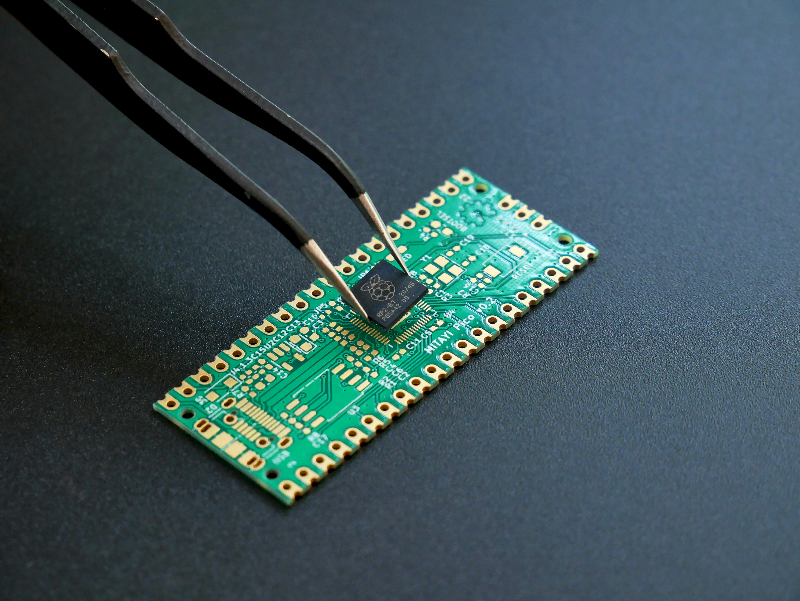
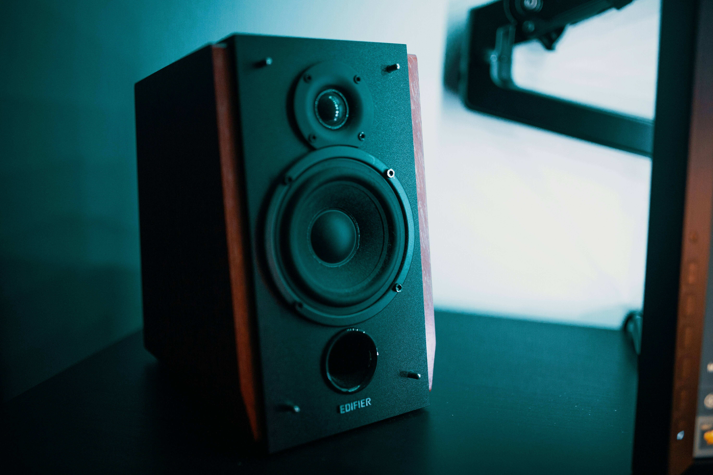

Practicals
All course practicals and their relevant files are given on this page. See
the Resources page for STM datasheets, HAL libraries, and STM32CubeIDE setup info.
Note that all practical reports must be completed in IEEE Conference format:
Practical 1A
From working with the STM32 previously, you should know how to interface with some basic board components, namely the LEDs and pushbuttons. This practical will recap both of these briefly and extend your knowledge of embedded systems to another major topic: timers. This practical also serves as an introduction to the use of STM32CubeIDE and the Hardware Abstraction Layer (HAL) libraries. These tools simplify the programming of your C development board by abstracting low-level hardware interactions
Practical manualPractical 1B
In this practical you will explore benchmarking the computing performance of the STM32F0 using a well known benchmark called Mandelbrot set. After this practical, you should be comfortable profiling embedded code in terms of execution time and simple checksum.
Practical manual
Practical 2
In this practical, you will be writing Assembly code to interface with your microcontroller board to perform basic operations. After this practical, you should know how to manipulate the LEDs on your STM board and use the pushbuttons to change their sequencing — all of which is done in Assembly.
Practical manual
Practical 3
In this practical, you will switch to the STM32F4, which offers greater processing power compared to STM32F0 (See the Resources page for datasheets). This practical is more open ended and will involve benchmarking and comparison of the performance between STM32F0 and STM32F4.
Practical manual
Practical 4
This practical introduces you to DACs. A DAC converts a digital code into an analog voltage or current. DACs have a variety of uses, with the most important among them being converting digital signals to analog audio in just about every single electronic audio system in the world. In this practical we will be making use of a quick and dirty DAC, an amplifier circuit, look-up tables (LUTs) and then use a small speaker to produce audible sound. Volume control will be implemented using an analog potentiometer and audio signals will be generated from lookup tables (LUTs) derived from .wav files and three distinct waveforms.
Practical manual